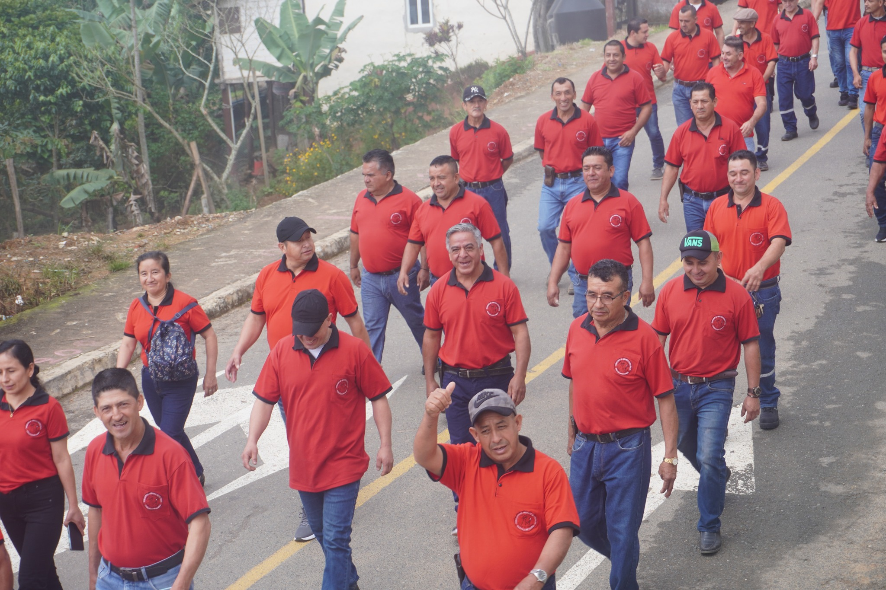
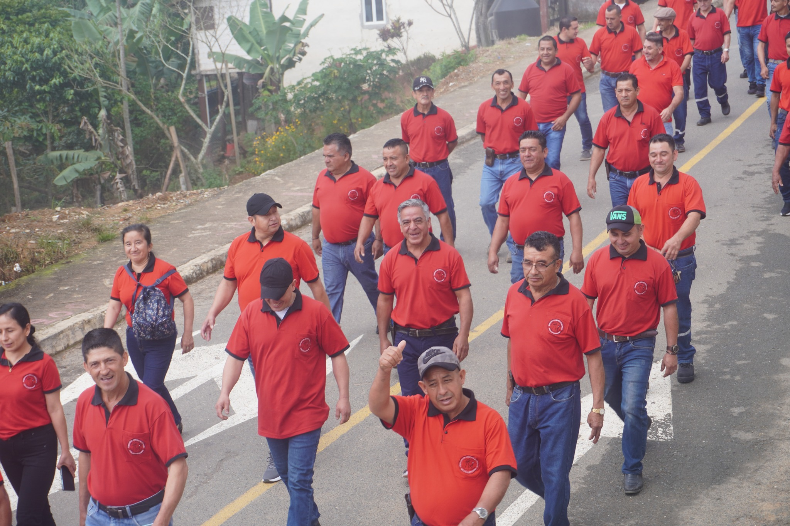

Chaguarpamba Inolvidable
Chaguarpamba un pueblo ubicado en la provincia de Loja- Ecuador, con una maravillosa historia y tradiciones culturales, caracterizada por su ambiente agradable y su gente amable.
 Chaguarpamba es un encantador pueblo situado en la provincia de Loja, Ecuador, conocido por su belleza natural y su rica herencia cultural. Este lugar, rodeado de montañas y paisajes verdes, ofrece un ambiente tranquilo y acogedor que atrae tanto a visitantes como a residentes. La población de Chaguarpamba se caracteriza por su amabilidad y hospitalidad, lo que hace que quienes lo visitan se sientan como en casa.
La historia de Chaguarpamba se remonta a tiempos antiguos, con influencias indígenas y coloniales que han dejado una huella perdurable en su cultura. A lo largo de los años, el pueblo ha mantenido sus tradiciones, celebrando festividades que reflejan su identidad cultural. Entre estas, destacan las fiestas patronales, donde la música, la danza y la gastronomía local se combinan para crear un ambiente festivo y comunitario.Chaguarpamba también es poseedora de gran riqueza arqueológica, aquí se encuentran varios bloques pétreos, ubicados en Buenavista, finca La Primavera; y en Mizhquillana, finca agrícola La Vega de los Mangos. Se observan petroglifos de diversas formas y tamaños; así como singulares símbolos tallados en ellas.
Sin duda alguna este cantón posee bellos e imponentes cerros desde donde se puede apreciar majestuosos paisajes. Visita el “Surapo” que tiene forma de una punta de lanza; el “Infiernillos” en donde cuenta la leyenda que se encuentra enterrada una paila de oro; el “Chincha Cruz” que es el más alto del cantón, rodeado de bosque nativo con diversidad de flora y fauna; y “Piedra Tabla”.
Y si de balnearios se trata Chaguarpamba te ofrece la “ruta de los balnearios” con 26 kilómetros de aventura y esparcimiento. Está conformada por los balnearios: “Rinconcito del Cielo”, “La Delicia”, “Parador Turístico Agua y Sol”, “Lagunas de Chipianga”, “La Cascada” y “Las Juntas”. En estos sitios puedes degustar la deliciosa gastronomía local en los restaurantes y cafeterías.

Chaguarpamba es un encantador pueblo situado en la provincia de Loja, Ecuador, conocido por su belleza natural y su rica herencia cultural. Este lugar, rodeado de montañas y paisajes verdes, ofrece un ambiente tranquilo y acogedor que atrae tanto a visitantes como a residentes. La población de Chaguarpamba se caracteriza por su amabilidad y hospitalidad, lo que hace que quienes lo visitan se sientan como en casa.
La historia de Chaguarpamba se remonta a tiempos antiguos, con influencias indígenas y coloniales que han dejado una huella perdurable en su cultura. A lo largo de los años, el pueblo ha mantenido sus tradiciones, celebrando festividades que reflejan su identidad cultural. Entre estas, destacan las fiestas patronales, donde la música, la danza y la gastronomía local se combinan para crear un ambiente festivo y comunitario.Chaguarpamba también es poseedora de gran riqueza arqueológica, aquí se encuentran varios bloques pétreos, ubicados en Buenavista, finca La Primavera; y en Mizhquillana, finca agrícola La Vega de los Mangos. Se observan petroglifos de diversas formas y tamaños; así como singulares símbolos tallados en ellas.
Sin duda alguna este cantón posee bellos e imponentes cerros desde donde se puede apreciar majestuosos paisajes. Visita el “Surapo” que tiene forma de una punta de lanza; el “Infiernillos” en donde cuenta la leyenda que se encuentra enterrada una paila de oro; el “Chincha Cruz” que es el más alto del cantón, rodeado de bosque nativo con diversidad de flora y fauna; y “Piedra Tabla”.
Y si de balnearios se trata Chaguarpamba te ofrece la “ruta de los balnearios” con 26 kilómetros de aventura y esparcimiento. Está conformada por los balnearios: “Rinconcito del Cielo”, “La Delicia”, “Parador Turístico Agua y Sol”, “Lagunas de Chipianga”, “La Cascada” y “Las Juntas”. En estos sitios puedes degustar la deliciosa gastronomía local en los restaurantes y cafeterías.
